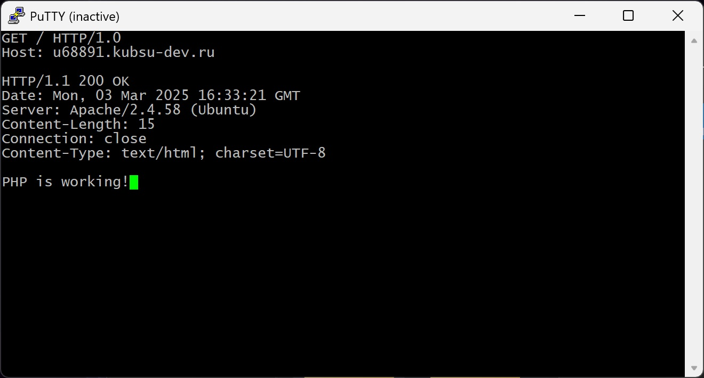
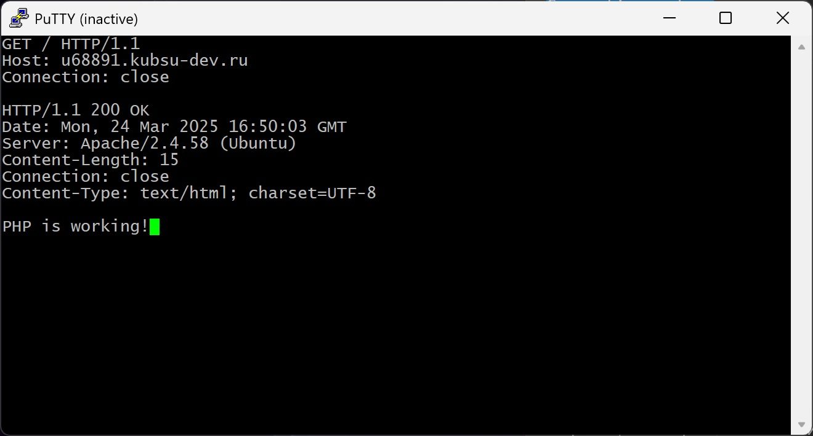
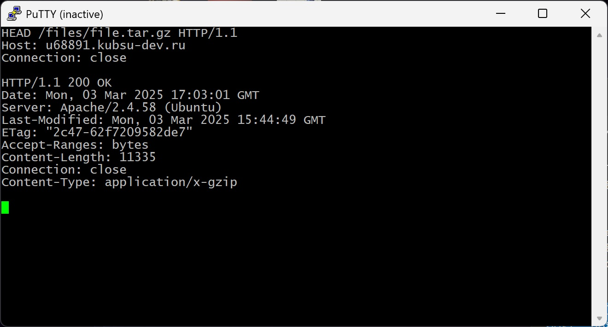
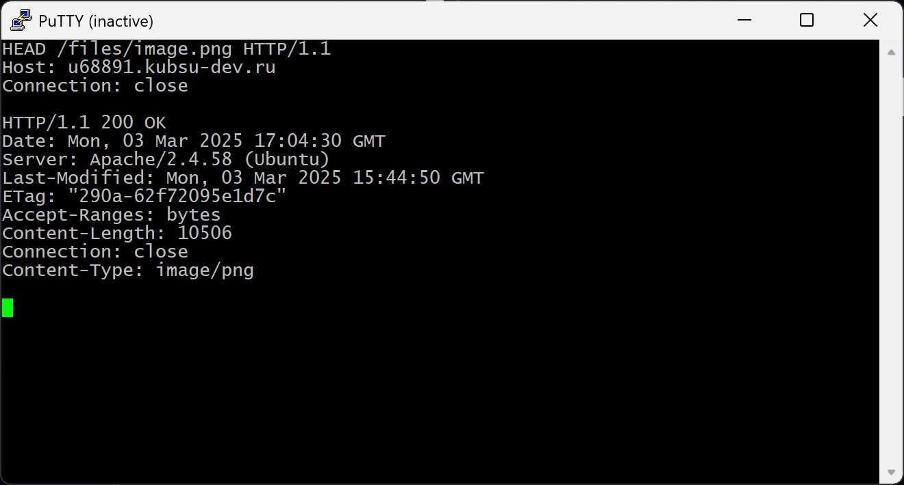
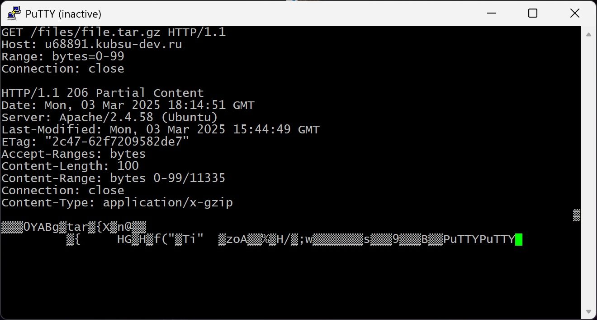
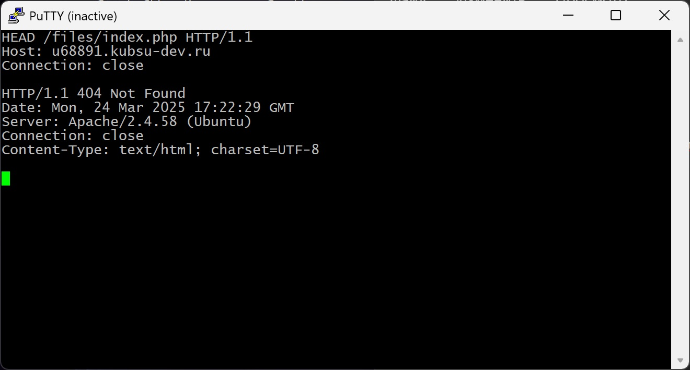

1. Получить главную страницу методом GET в протоколе HTTP 1.0

Сервер возвращает содержимое главной страницы
2. Получить внутреннюю страницу методом GET в протоколе HTTP 1.1

Сервер возвращает содержимое внутренней страницы
3. Определить размер файла file.tar.gz, не скачивая его

Content-Length указывает размер файла в байтах: 11335
4. Определить медиатип ресурса /image.png

В строке Content-Type указан медиатип: image/png
5. Отправить комментарий на сервер по адресу /index.php

6. Получить первые 100 байт файла /file.tar.gz

Для этого используем Range: bytes=0-99
7. Определить кодировку ресурса /index.php

В строке Content-Type указана кодировка: charset=UTF-8